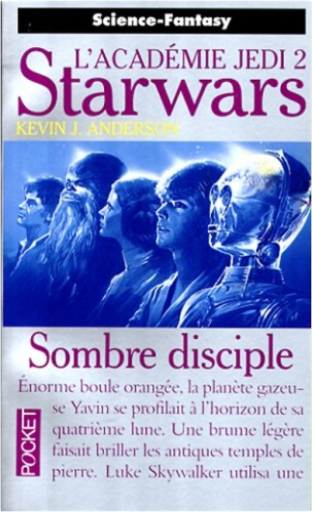
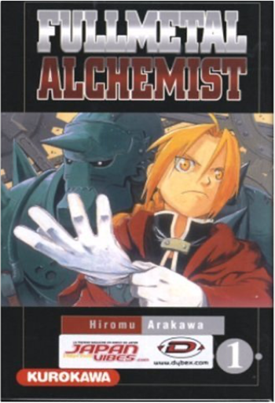
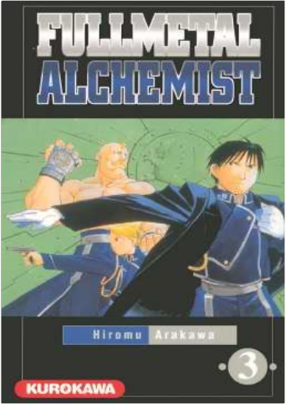
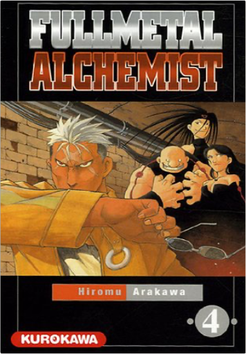
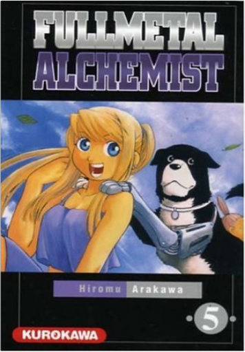

Books
Movies
Albums
Videogames
Games
BD
BD Camille
Blu-ray
Business
Camille
Comics
Cooking
Lego
Manga
Pauline
Photography
Sport
Star Wars
T'choupi
Travel
TV Shows
Un livre dont vous êtes le héro
Vinyl
Walt Disney
1
2
3
4
5
star wars, tome 16 : l'académie jedi, partie 1, la quête des jedi
kevin james anderson

star wars, tome 17 : l'académie jedi, partie 2, sombre disciple
kevin james anderson
star wars, tome 18 : l'académie jedi, partie 3, les champions de la force
kevin james anderson
Kilomètre zéro : Le chemin du bonheur
Maud Ankaoua

fullmetal alchemist, tome 1
hiromu arakawa
fullmetal alchemist, tome 2
hiromu arakawa
5

fullmetal alchemist, tome 3
hiromu arakawa

fullmetal alchemist, tome 4
hiromu arakawa
5

fullmetal alchemist, tome 5
hiromu arakawa
fullmetal alchemist, tome 6
hiromu arakawa
5
fullmetal alchemist, tome 7
hiromu arakawa
fullmetal alchemist, tome 8
hiromu arakawa
1
2
3
4
5


 Made with Delicious Library Made with Delicious Library
Made with Delicious Library Made with Delicious Library